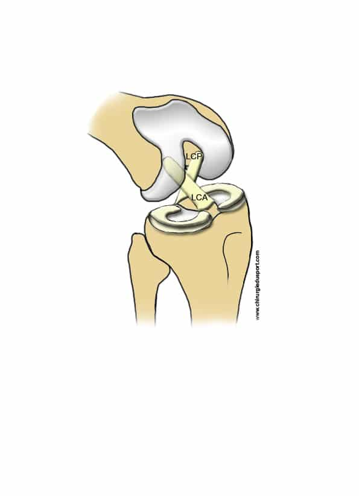
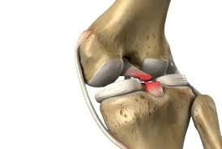
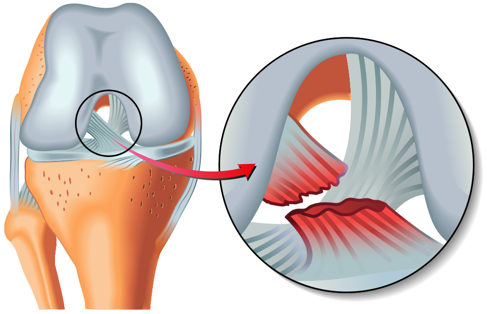
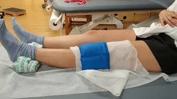

Ligamento Cruzado
El ligamento cruzado es una banda de tejido elástico y resistente que conecta el fémur con la tibia dentro de la articulación de la rodilla. Su función principal es proporcionar estabilidad. La articulación de la rodilla tiene dos ligamentos cruzados: anterior y posterior.

Tipos de ligamentos cruzados
Ligamento cruzado anterior (LCA): es el más conocido y el que se lesiona con mayor frecuencia. Evita que la tibia se deslice demasiado hacia adelante respecto al fémur y estabiliza la rodilla durante los giros. Su rotura es común en deportes como fútbol o baloncesto.
Ligamento cruzado posterior (LCP): es más grueso y fuerte; evita que la tibia se desplace demasiado hacia atrás.

Lesiones comunes
Suele lesionarse por movimientos bruscos, como frenar de golpe, cambiar de dirección rápidamente o recibir un impacto directo.
- Rotura parcial
- Rotura total

Síntomas
Los síntomas pueden incluir dolor intenso, sensación o sonido de "chasquido" al lesionarse, inflamación rápida y sensación de inestabilidad o bloqueo en la rodilla.
- LCA: dolor intenso, chasquido, inflamación y pérdida de estabilidad.
- LCP: síntomas más sutiles inicialmente, como dolor leve y sensación de inestabilidad en ciertas posturas.

Tratamiento
Depende de la gravedad y del nivel de actividad. Opciones:
- Reposo, hielo, compresión y elevación (RICE) para lesiones leves.
- Fisioterapia para fortalecer músculos y recuperar estabilidad.
- Cirugía (reconstrucción con injerto) en roturas completas o cuando el paciente requiere alta demanda funcional.